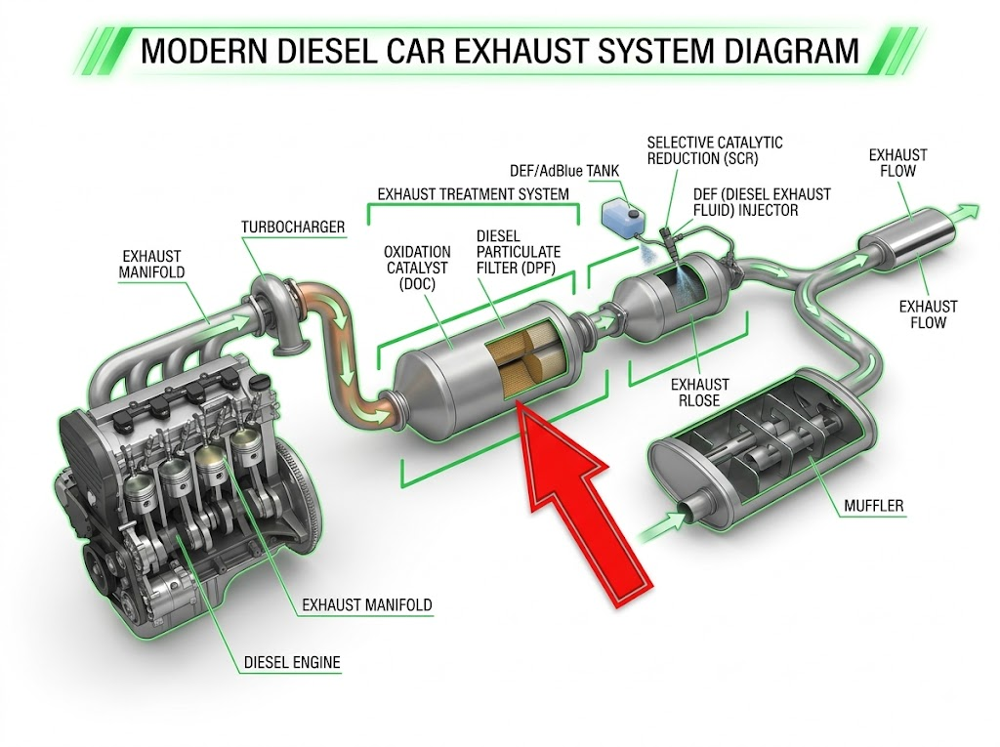
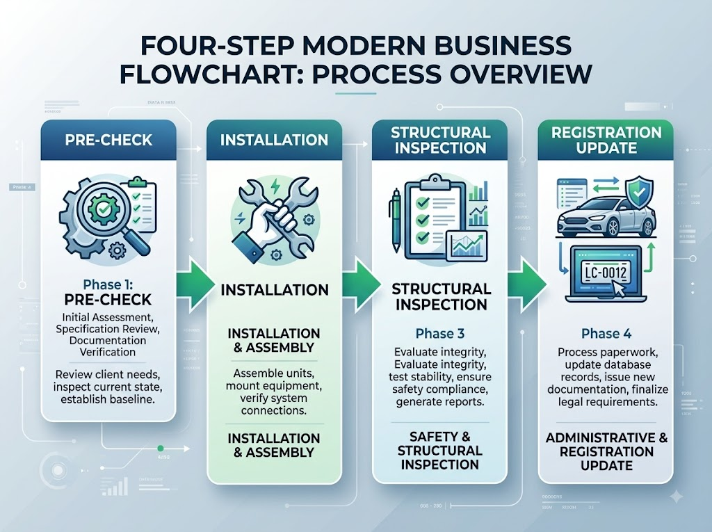

내 차를 더 편하고 개성 있게 꾸미고 싶은 마음은 자연스럽습니다. 그런데 차량 튜닝은 어디까지가 합법이고 어디서부터 불법인지 경계가 애매해 단속되고 나서야 알게 되는 경우가 많습니다. 선팅 하나만 해도 전면 유리와 측면 유리에 적용되는 기준이 다르고, 배기 소음이나 DPF(매연저감장치) 제거는 형사처벌까지 연결될 수 있습니다.
이 글에서는 차량 튜닝의 주요 항목별 합법·불법 기준과 처벌 수위, 그리고 합법 튜닝을 위한 신고 절차를 알기 쉽게 정리해 드립니다. 단순한 꾸밈에서 기계적 개조까지 단계별로 살펴보겠습니다.
차량 튜닝이란 자동차 제조사의 기본 사양을 변경하거나 성능·외관을 개조하는 모든 행위를 통칭합니다. 단순히 스티커를 붙이거나 방향제를 달아 두는 것은 튜닝에 해당하지 않지만, 엔진·배기·차체 구조·유리 등에 영향을 주는 개조는 자동차관리법상 신고 또는 승인 대상이 될 수 있습니다.
크게 두 가지로 나눌 수 있습니다.
① 구조변경 대상 튜닝: 차체 길이·너비·높이 변경, 엔진 교체, 연료 변경, 좌석 수 변경 등. 반드시 교통안전공단(TS)의 구조변경 검사를 받아야 합니다.
② 단순 부품 교체·장착: 외관에 큰 영향 없는 실내 액세서리 장착, 블랙박스 설치 등. 대부분 신고 없이 가능하지만 배선 개조가 수반되면 달라질 수 있습니다.
합법과 불법의 경계를 모르고 진행하면 과태료·벌금·차량 압류·보험 적용 배제까지 연결될 수 있으므로 주의가 필요합니다.
선팅(틴팅)은 가장 대중적인 튜닝 항목 중 하나입니다. 국내 도로교통법 시행령 기준으로 가시광선 투과율(VLT)에 따라 허용 여부가 결정됩니다. 통상적으로 알려진 기준은 아래와 같습니다.
• 앞유리(전면 유리): 가시광선 투과율 70% 이상 유지 필요
• 앞측창(운전석·조수석 창문): 가시광선 투과율 40% 이상 유지 필요
• 뒷좌석 측면·후면 유리: 별도 기준 없음(자유 시공 가능)
단, 2026년 이후 법령 개정 여부는 반드시 공식 채널에서 재확인하시기 바랍니다. 투과율 기준은 몇 차례 논의 과정을 거쳐 변경된 전례가 있으므로 시공 전 최신 고시를 확인하는 것이 안전합니다.
선팅 필름 구매 시 제품에 표기된 VLT 수치와 실제 시공 후 측정값이 다를 수 있습니다. 경찰 단속 현장에서는 광학 측정기로 현장 측정하므로, 여유 있게 기준치를 넘는 제품을 선택하시는 것이 안전합니다.
블랙박스 장착은 일반적으로 합법입니다. 시중에 판매되는 블랙박스를 시거잭이나 퓨즈박스에 연결하는 방식은 별도 신고 없이 가능합니다. 다만 다음 경우에는 주의가 필요합니다.
• 매립형 설치(배선 직접 개조): 차량 전기 계통을 직접 개조하는 경우 구조변경 신고가 필요할 수 있습니다. 전문 정비업소에서 시공하고 확인서를 받아 두는 것이 좋습니다.
• 전면 유리 부착 위치: 운전자 시야를 방해하는 위치에 부착하면 별도 단속 대상이 될 수 있습니다. 통상 후사경(룸미러) 뒤쪽에 부착하는 것이 가장 무난합니다.
LED 조명의 경우, 실내 무드등이나 발판 조명은 일반적으로 허용됩니다. 단 외부에서 보이는 빨간·파란색 점멸등은 경찰차·소방차 유사 장비로 오인될 수 있어 금지됩니다. 전조등·미등을 법정 규격 외 LED로 무단 교체하는 것도 단속 대상이 될 수 있으므로 주의하시기 바랍니다.
DPF(Diesel Particulate Filter, 매연저감장치)는 경유차 배기 계통에 장착된 미세먼지 저감 장치입니다. 일부 운전자가 엔진 출력 향상이나 연비 개선 목적으로 DPF를 제거하거나 기능을 무력화하는 경우가 있는데, 이는 대기환경보전법 위반에 해당합니다.
통상적으로 알려진 처벌 기준은 다음과 같습니다.
• 임의 제거 시 과태료: 통상 최대 200만 원 수준(구체적 금액은 시행령 기준으로 발행 전 재확인 권고)
• 재판매 목적 제거·판매: 형사처벌 대상
• 배출가스 허용 기준 초과: 자동차검사 불합격 및 운행 정지 명령
DPF를 제거하면 자동차 정기검사에서 반드시 불합격 처리되며, 이후 차량 운행 자체가 불가능해집니다. 또한 사고 발생 시 보험 처리에서도 불이익이 생길 수 있습니다. 출력 향상을 원한다면 합법적인 ECU 튜닝(신고 후 진행)을 검토하시는 것을 권장합니다.

머플러 교체나 배기 개조는 소음 기준과 구조변경 신고 두 가지를 모두 충족해야 합법입니다. 자동차관리법 시행규칙상 차종·배기량별로 허용 소음 기준이 다르게 적용되며, 통상적으로 95dB 초과 시 단속 대상이 됩니다(정확한 기준은 차종·측정 방법에 따라 다를 수 있으므로 공식 고시 확인 필요).
불법 배기 소음 단속은 경찰 현장 단속 외에도 소음 카메라를 통한 무인 단속도 점차 확대되고 있습니다. 단속되면 과태료 부과와 함께 원상복구 명령이 내려질 수 있습니다.
머플러 교체 시에는 반드시 인증된 부품을 사용하고, 교체 후 소음 측정 확인서를 발급받는 것이 분쟁을 예방하는 방법입니다. 스포츠카 감성의 배기음을 원한다면 합법 데시벨 범위 내의 튜닝 머플러 제품을 선택하세요.
타이어나 휠 교체는 차량 안전성과 직결되므로, 단순히 보기 좋은 제품을 선택하는 것 이상의 주의가 필요합니다.
허용 범위의 원칙
• 타이어 너비: 차량 제조사 권장 규격 대비 과도하게 넓은 타이어는 휠 하우스 간섭 및 조향 이상을 유발할 수 있어 구조변경 신고 대상이 될 수 있습니다.
• 휠 인치업: 외경(OD)이 크게 바뀌면 주행 성능·속도계 오차에 영향을 줍니다. 통상 전체 외경은 ±3% 이내 유지가 권장됩니다.
• 런플랫 타이어 교체: 런플랫 전용 차량에서 일반 타이어로 교체하면 사고 위험이 커질 수 있습니다.
휠의 경우 오프셋(옵셋) 값이 규격을 벗어나면 베어링 마모나 주행 불안정으로 이어지므로, 차량 제조사 권장 범위를 반드시 확인하시기 바랍니다.
범퍼나 사이드스커트 등 외관 변경은 재질·크기에 따라 신고 대상 여부가 달라집니다.
신고 불필요(통상적 범위)
• 기존 차체 외관을 크게 바꾸지 않는 범위의 에어로파츠 장착
• 외관 색상 변경(도색)
• 선루프 유리 교체(동일 규격)
구조변경 신고 필요
• 차체 길이·너비·높이가 변경되는 외관 개조
• 범퍼 철거 후 FRP 소재로 전면 교체 등 차체 기준 변경
• 견인장치(토잉바) 후부 장착
• 루프 캐리어·적재함 등 상부 하중 구조물 추가
구조변경 신고 없이 위 항목을 개조했다가 단속되면 과태료와 함께 원상복구 명령이 내려집니다. 개조 전 반드시 TS한국교통안전공단 또는 관할 자동차검사소에 문의하시기 바랍니다.
구조변경이 필요한 튜닝을 합법적으로 진행하는 절차는 아래와 같습니다.
1단계 — 튜닝 계획 사전 확인
TS한국교통안전공단 자동차검사소 또는 지정 튜닝 검사소에 사전 문의합니다. 변경 내용이 구조변경 대상인지, 어떤 서류가 필요한지 안내받습니다.
2단계 — 튜닝 작업 진행
자동차관리법상 자동차 정비업 등록을 한 업체에서 시공합니다.
3단계 — 구조변경 검사 신청
시공 완료 후 검사소에 구조변경 검사를 신청합니다. 필요 서류: 자동차 등록증, 보험증서, 시공 명세서, 부품 인증서 등(검사소별 상이).
4단계 — 자동차 등록증 변경
검사 합격 후 관할 시·군·구청에 변경 내용을 등록합니다.
합법 튜닝을 거친 차량은 자동차등록증에 구조변경 이력이 기재되어 향후 매매 시에도 투명하게 공개됩니다.

불법 튜닝이 단속되면 관련 법률에 따라 복합적인 제재가 가해집니다. 주요 적용 법규와 통상적인 처벌 내용은 다음과 같습니다.
자동차관리법
무등록 구조변경 시 100만 원 이하 과태료, 구조변경 검사 미이행 시 추가 과태료(구체 금액은 시행령 확인). 원상복구 명령 불이행 시 형사처벌 전환 가능.
도로교통법
불법 선팅, 적색·청색 등화 장착 등 단속 시 통상 범칙금 부과.
대기환경보전법
DPF 임의 제거, 배출가스 저감장치 무력화 시 최대 200만 원 과태료(공식 확인 필요).
이의신청 방법
단속 결과에 이의가 있을 경우 단속 통보서를 받은 날로부터 통상 60일 이내에 관할 기관(경찰서, 시·군·구청, 교통안전공단 등)에 서면으로 이의신청을 할 수 있습니다. 시공 업체 확인서나 부품 인증 서류를 함께 제출하면 도움이 됩니다.
불법 튜닝이 확인된 상태에서 사고가 발생하면 보험사가 면책을 주장할 수 있으므로 보험 약관도 반드시 확인하시기 바랍니다.
Q. 중고차를 샀는데 전 주인이 불법 튜닝을 한 것 같습니다. 제가 처벌받나요?
현재 소유자가 인지하고 있었다면 책임이 생길 수 있습니다. 중고차 구매 시 자동차등록증과 검사 이력을 반드시 확인하고, 불법 튜닝이 의심되면 즉시 원상복구 또는 합법화 절차를 밟으시기 바랍니다.
Q. 자동차 검사에서 합격했으면 전부 합법인가요?
검사 시점에 허용 기준을 충족했더라도, 이후 추가 개조를 하면 다시 불법이 될 수 있습니다. 또한 검사 항목에 포함되지 않는 일부 개조는 별도로 단속될 수 있습니다.
Q. 선팅 가게에서 "합법 필름이다"라고 했는데 단속됐습니다.
필름 자체의 VLT와 실제 시공 후 유리 전체 투과율은 다를 수 있습니다. 시공 시 업체에서 실측 투과율 확인서를 요청하세요.
Q. 경차나 전기차도 동일한 기준이 적용되나요?
기본 틀은 동일하지만 차종별로 세부 기준이 다를 수 있습니다. TS한국교통안전공단(1577-0990) 또는 자동차민원 대국민포털에서 차량 유형별 기준을 확인하시기 바랍니다.
Q. 비용을 아끼려고 직접 DPF를 청소했습니다. 불법인가요?
DPF 청소(재생) 자체는 문제없으나, 장치를 분리·제거하거나 기능을 무력화하면 불법입니다. 청소 후 반드시 재장착하고 정상 작동을 확인하세요.
#차량튜닝 #불법튜닝 #선팅기준 #DPF제거 #자동차개조 #구조변경 #블랙박스 #매연저감 #교통법규 #튜닝합법